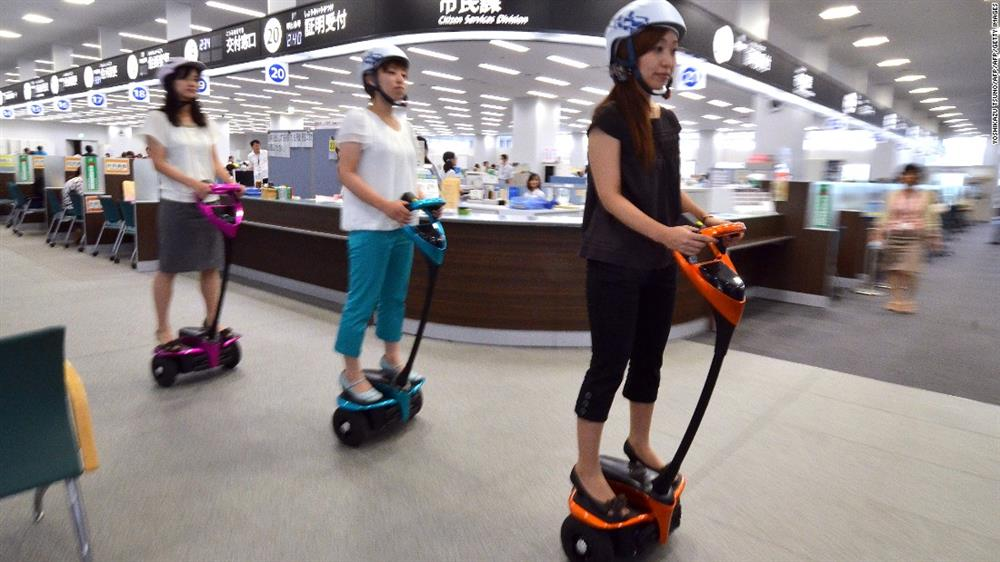

Will the electric vehicle known as the Segway alter the ways that individuals get around? Dean Kamer, the inventor of the Segway, believes that this revolutionary vehicle will someday substitute for the bicycles and automobiles that now crowd our cities. When he introduced the Segway in 2001, he believed it would change our lives.
Although the Segway uses up-to-the-minute technology, it looks very ordinary. The metal framework of the Segway consists of a platform where an individual stands. Attached to the front of the platform is a tall post with handles for the driver to hold. On each side of the platform is a wide, rubber wheel. Except for these two wheels, there are no mechanical parts on the Segway. It has no engine, no brakes, no pedal power, no gears, and no steering wheel.
Instead it uses a computer system that imitates the ability of humans to keep their balance.
This system seems to move to the driver’s thoughts. For example, when the driver thinks “Go forward’’, the Segway moves forwards, and when the driver thinks, “Stop’’, it stops. The Segway is not really responding to the driver’s thoughts, but to the tiny changes in balance that the driver makes as he prepares his body to move forward or to stop. For example, when the driver thinks about moving forward, he actually leans slightly forward, and when he thinks of stopping or slowing, the driver leans slightly back.
The Segway is powered by batteries that allow it to travel about T7miles on one battery charge. It is designed for short-range, low-speed operation. It has three speed settings. The slowest is the setting for learning, with speeds of up to 6 miles per hour. Next is the sidewalk setting, with speeds of up to 9 miles , per hour. The highest setting allows the driver to travel up to 12.5 miles per hour in open, flat areas.
At all three speed settings, the Segway can go wherever a person can walk, both indoors and outdoors.
Workers who must walk a lot in their jobs might be the primary users of Segways. For example, police officers could drive Segways to patrol city streets, and mail carriers could drive from house to house to deliver letters and packages. Farmers could quickly inspect distant fields and bams, and rangers, or parks. Security guards could protect neighborhoods or large buildings.
Any task requiring a lot of walking could be made easier. In cities, shoppers could leave their cars at home and ride Segway from store to store. Also, people who cannot comfortably walk due to age, illness, or injury could minimize their walking but still be able to go many places on a Segway.
Why is it, then, that our job sites, parks, and shopping centers have not been subsequently filled with Segways since they were introduced in 2001? Why hasn’t the expected revolution taken place? Studies have shown that Segways can help workers get more done in a shorter time. This saves money. Engineers admire Segways as a technological marvel.
Business, government agencies, and individuals, however, have been unwilling to accept the Segway. Yes, there have been some successes. In a few cities, for example, mail carriers drive Segway on their routes, and police officers patrol on Segways. San Francisco, California, and Florence, Italy, are among several cities in the world that offer tours on Segways for a small fee. Occasionally you will see golfers riding Segways around golf courses. Throughout the world more than 150 security agencies use Segways, and China has recently entered the overseas market. These examples are encouraging, but can hardly be called a revolution.
The primary reason seems to be that people have an inherent fear of doing something new. They fear others will laugh at them for buying a “toy’’. They fear losing control of the vehicle. They fear being injured. They fear not knowing the rules for using a Segway. They fear making people angry if they ride on the sidewalk. All these fears and others have kept sales low.
The inventor explained why people have been slow to accept the Segway. He said, "We didn’t realize that although technology moves very quickly, people’s mind-set changes very slowly.” Perhaps a hundred years from now millions of people around the world will be riding Segways.